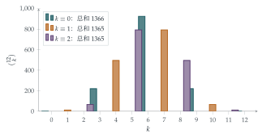

STEP I 1990，第 2 题
继续之前，请先阅读题目（原题为英文）。题目载于 STEP Support Programme 的题目资料库： step.maths.org/questions/90-s1-q2
引子
帕斯卡三角形（Pascal’s triangle）同一行的二项式系数（binomial coefficients）加起来等于 \(2^n\)：只要在 \((1 + x)^n\) 中代入 \(x = 1\) 即可。若改为代入 \(x = -1\)，便得到交错和，其值为 \(0\)；把两式相加，可知位于偶数位置的系数之和为 \(2^{n-1}\)，刚好是一半。所以偶数位置和奇数位置的项把总和平分。
那么每隔两项取一个、即每第三个系数又如何？没有任何实数 \(x\) 能够挑出位置 \(0, 3, 6, \ldots\)。但有一个复数可以。三次单位根（cube roots of unity）就像一个滤波器：对 \(1\)、\(\omega\) 和 \(\omega^2\) 取平均，幂 \(\omega^k\) 在 \(k\) 是 \(3\) 的倍数时给出 \(1\)，否则给出 \(0\)。这个想法称为单位根滤波器（roots-of-unity filter），是离散傅里叶变换（discrete Fourier transform）的小型版本，而后者是有史以来最重要的算法之一。
动笔之前
\(\omega\) 是 \(z^3 - 1 = 0\) 的一个根。试把 \(z^3 - 1\) 因式分解。为甚么由此可得 \(1 + \omega + \omega^2 = 0\)？
\(z^3 - 1 = (z - 1)(z^2 + z + 1)\)。由于 \(\omega^3 = 1\) 但 \(\omega \neq 1\)，\(\omega\) 必定是第二个因式的根：\(\omega^2 + \omega + 1 = 0\)。从几何上看，\(1\)、\(\omega\) 和 \(\omega^2\) 是一个以原点为中心的等边三角形的顶点，它们的和就是该三角形的质心，即 \(0\)。
逐步解题
阶段 1 模与辐角
由 \(1 + \omega + \omega^2 = 0\)，得 \(1 + \omega^2 = -\omega\)。因为 \(\omega = e^{2\pi\mathrm{i}/3}\)，所以 \(-\omega = e^{\mathrm{i}\pi}e^{2\pi\mathrm{i}/3} = e^{5\pi\mathrm{i}/3} = e^{-\pi\mathrm{i}/3}\)。故 \(1 + \omega^2\) 的模（modulus）为 \(1\)，辐角（argument）为 \(-\frac\pi3\)。同理，\(1 + \omega = -\omega^2 = e^{\pi\mathrm{i}/3}\)，其模为 \(1\)，辐角为 \(\frac\pi3\)。
阶段 2 滤波器
当 \(k\) 是 \(3\) 的倍数时，\(1 + \omega^k + \omega^{2k}\) 等于甚么？不是倍数时又如何？
若 \(3 \mid k\)，则 \(\omega^k = 1\)，和为 \(3\)。若否，\(\omega^k\) 是 \(\omega\) 或 \(\omega^2\)，而无论哪一种情况，都有 \(1 + \omega^k + \omega^{2k} = 1 + \omega + \omega^2 = 0\)。因此，表达式 \(\frac13(1 + \omega^k + \omega^{2k})\) 在 \(3 \mid k\) 时等于 \(1\)，否则等于 \(0\)：它是一个侦测 \(3\) 的倍数的探测器。
把 \((1 + \omega^r)^n\) 对 \(r = 1, 2, 3\) 相加，每一项都用二项式定理（binomial theorem）展开。你得到甚么？
由于 \(\omega^3 = 1\)， \[(1 + \omega)^n + (1 + \omega^2)^n + (1 + 1)^n = \sum_{k=0}^{n} \binom nk\bigl(\omega^k + \omega^{2k} + 1\bigr) = 3\sum_{3 \mid k} \binom nk.\] 另一方面，由阶段 1， \[(1 + \omega)^n + (1 + \omega^2)^n + 2^n = e^{n\pi\mathrm{i}/3} + e^{-n\pi\mathrm{i}/3} + 2^n = 2\cos\frac{n\pi}{3} + 2^n.\] 两边除以 \(3\) 便得到所求公式。■
阶段 3 两个计算
对于 \(n = 25\)：\(\frac{25\pi}{3} = 8\pi + \frac\pi3\)，所以 \(\cos\frac{25\pi}{3} = \frac12\)，于是 \[\binom{25}{0} + \binom{25}{3} + \cdots + \binom{25}{24} = \frac{33554432 + 1}{3} = 11184811.\]
第二个和需要的是满足 \(k \equiv 2 \pmod 3\) 的位置。怎样修改滤波器，使它侦测的是 \(k \equiv 2\) 而不是 \(k \equiv 0\)？
把探测器平移：\(\frac13\bigl(1 + \omega^{k-2} + \omega^{2(k-2)}\bigr)\) 恰好在 \(k \equiv 2 \pmod 3\) 时等于 \(1\)。由于 \(\omega^{-2} = \omega\) 及 \(\omega^{-4} = \omega^2\)，由此可得 \[\sum_{k \equiv 2} \binom nk = \frac13\Bigl(2^n + \omega(1 + \omega)^n + \omega^2(1 + \omega^2)^n\Bigr).\] 取 \(n = 24\)，则 \((1 + \omega)^{24} = e^{8\pi\mathrm{i}} = 1\)，同样 \((1 + \omega^2)^{24} = 1\)，所以括号内的值为 \(2^{24} + \omega + \omega^2 = 2^{24} - 1\)。由 \(2^{24} = 16777216\)， \[\binom{24}{2} + \binom{24}{5} + \cdots + \binom{24}{23} = \frac{16777215}{3} = 5592405. \qed\]

回顾
对单位根取平均，可按余数筛选。\(\frac13\sum_{r}\omega^{rk}\) 等于 \(1\) 还是 \(0\)，视乎 \(3\) 是否整除 \(k\)。把多项式在各单位根处的值相加，便能挑出每第三个系数。
平移滤波器。取平均之前先乘以 \(\omega^{-rj}\)，便能挑出满足 \(k \equiv j\) 的系数。
用复数求实数答案。答案是整数，题目问的也是整数，但解题的路径却穿过了复平面。
背后的数学
把 \(3\) 换成任意的 \(N\)，并把 \(\omega\) 换成 \(e^{2\pi\mathrm{i}/N}\)。对于一列数 \(a_0, a_1, \ldots, a_{N-1}\)，以下各数 \[\hat a_r = \sum_{k=0}^{N-1} a_k\,\omega^{rk}\] 构成它的离散傅里叶变换，而正是滤波恒等式 \(\sum_r \omega^{rk} = N\) 或 \(0\)，让你可以从 \(\hat a_r\) 还原出 \(a_k\)。这个变换把一个信号分解成它的各个频率成分。1965 年，James Cooley 和 John Tukey 发表了一种方法，只需大约 \(N\log_2 N\) 步而非 \(N^2\) 步便能把它算出，这就是快速傅里叶变换（fast Fourier transform，简称 FFT）；高斯（Gauss）早在 1805 年已发现本质上相同的想法，但从未发表。FFT 应用于音讯和图像压缩（MP3 和 JPEG）、流动电话信号、医学扫描仪，以及极大数字的乘法，并且经常获列为二十世纪最重要的算法之一。
生成函数
这个滤波器只是一个更宏大想法的其中一例：数列 \(a_0, a_1, a_2, \ldots\) 可以包装成一个多项式或幂级数（power series）\(A(x) = \sum a_kx^k\)，称为它的生成函数（generating function），而对数列进行的运算就变成对函数进行的运算。在 \(1\) 处求值，就是把数列求和；在单位根处求值，就是挑出各个剩余类（residue classes）；求导则是把各项以 \(k\) 加权。这样一来，许多计数问题都化为代数问题，而这正是第 9 章的核心技巧。同一个滤波器，配合五次单位根应用于 \((1 + x)^n\)，便会与正五边形和黄金比（golden ratio）扯上关系；我们会在 第 6.1 节 继续探讨单位根的代数。
思维技巧
要从一个和之中挑出满足某个条件的项，可找一个函数，使它在你想要的项上取值 \(1\)、在其余的项上取值 \(0\)，而这个函数是由对称平均构造出来的。
对单位根取平均就是经典的例子。同一个原理——“对一个对称群取平均，以分离出你想要的部分”——在代数中随处可见，由单位根滤波器以至群表示论（representation theory of groups）皆然。
延伸练习
偶数位置。利用二次单位根（\(1\) 和 \(-1\)）的滤波器，证明 \(\binom n0 + \binom n2 + \binom n4 + \cdots = 2^{n-1}\)。
另一个余数。求 \(\binom n1 + \binom n4 + \binom n7 + \cdots\) 的公式，并验证三条公式加起来等于 \(2^n\)。
每第四个。利用 \(\mathrm{i}\)，证明 \(\binom n0 + \binom n4 + \binom n8 + \cdots = \frac14\Bigl(2^n + 2^{n/2+1}\cos\frac{n\pi}{4}\Bigr)\)。
整除性。\(\{1, 2, \ldots, 12\}\) 有多少个子集的元素个数可被 \(3\) 整除？有多少个子集的元素之和可被 \(3\) 整除？（第二问的提示：考虑 \(\prod_{j=1}^{12}(1 + x^j)\) 在三次单位根处的值。）
延伸阅读
Herbert Wilf, generatingfunctionology（A. K. Peters；可于网上免费阅览）。一本引人入胜的生成函数入门书；单位根滤波器在书中很早便出现。
Arthur Benjamin & Jennifer Quinn, Proofs That Really Count（Mathematical Association of America）。以计数方法证明二项式恒等式。
T. W. Körner, Fourier Analysis（Cambridge University Press）。内容包括离散傅里叶变换和 FFT。